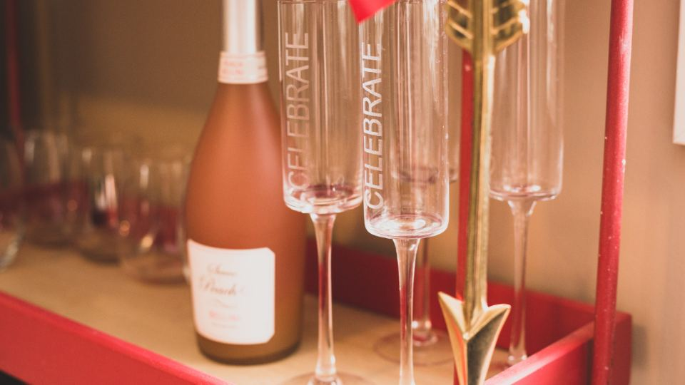
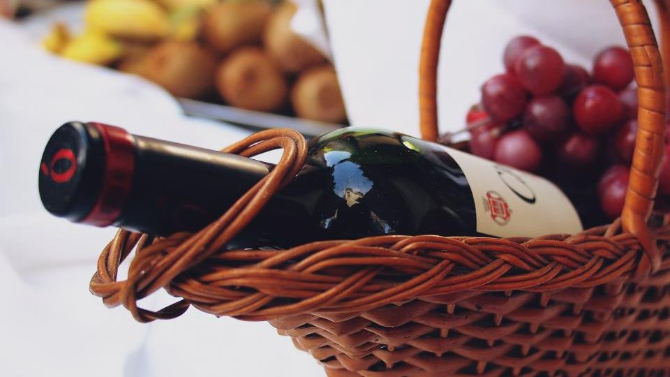

「副業を始めたいけれど、何をすればいいか分からない」「在庫を抱えるのは怖い」「でも、自分のブランドやお店を持ってみたい」——そんな思いを持つ方に、いま注目されているのが「オリジナルシャンパン」の事業です。
誕生日、結婚式、お店の周年、推し活。お祝いの場面で、世界に1本だけのオリジナルラベルのシャンパンを贈る——そんな演出の需要が、年々伸びています。この記事では、未経験からオリジナルシャンパン（通称オリシャン）で開業するという選択肢について、収益の目安や向いている人、始め方まで分かりやすくまとめました。
オリジナルシャンパンとは
オリジナルシャンパンとは、スパークリングワインのボトルに、オリジナルのデザインラベルを巻いた商品です。誕生日の名前入り、お店のロゴ入り、推しのキャラクター入りなど、デザインは自由自在。贈り物やお店の演出として、全国で毎月およそ30万本が流通しているといわれる市場です。
背景には、スパークリング市場そのものの拡大があります。ある予測では、市場規模は2024年の約1,690億円から、2033年には約2,760億円へと伸びると見込まれています。お祝いがある限り需要が尽きない、裾野の広い分野です。
副業・開業の「4つの壁」と、その解決

自分でこうした事業を始めようとすると、多くの人が次の壁にぶつかります。
- デザインの知識がない
- 大量の在庫を抱えるリスクが怖い
- 何から始めればいいか分からない
- 大きな初期投資はできない
オリジナルシャンパンの開業パッケージは、この4つの壁を解決する形で設計されているのが特徴です。
デザインの壁 → 専用エディタで解決
最大の壁である「デザイン」は、専用のデザインエディタが解決します。文字を入れて、画像を置いて、テンプレートを選ぶだけ。マウス操作だけで、プロ仕様のラベルが完成します。専門的なデザインスキルは必要ありません。
在庫の壁 → 受注生産でリスクを小さく
注文を受けてから制作する「受注生産」が基本のため、大量の在庫を抱える必要がありません。小さく始められるので、副業にも向いています。
収益の目安
気になる収益のイメージを見てみましょう。1本あたりの粗利を中央値で試算したモデルケースは、次のとおりです。
| 働き方 | 月間の本数 | 粗利の目安（月） |
|---|---|---|
| スキマ副業 | 30本 | 約45,000円 |
| 控えめ | 100本 | 約150,000円 |
| 標準 | 300本 | 約450,000円 |
| 好調 | 500本 | 約750,000円 |
※ 卸価格3,000円（税抜）・粗利1,500円/本で試算したモデルケースです。原価は使用するスパークリングワインにより前後します。別途、デザインエディタの利用料（月額4,980円）がかかります。表示の数値は収益を保証するものではなく、地域・価格設定・営業努力により異なります。
まずはスキマ時間の副業として月30本から。慣れてきたら本数を増やしていく、という段階的な始め方ができます。
開業パッケージに含まれるもの
届いたその日から始められるよう、開業に必要なものが一式そろっています。
- 専用資材 500枚セット（コピレタシート・転写フィルム・ネックラベル・台紙）
- 専用印刷機（オリシャン制作に最適化されたプリンター）
- ラミネーター（プロ品質の質感に仕上げる）
- 熱圧着機（剥がれにくい本格仕上げ）
- ネックカッター（フィルムを均一にカットする道具）
- 制作ガイド動画（手順を動画で完全レクチャー）
- 酒類販売の許可ガイド＋法対策サポート（正しい販売方法を講習でサポート）
機材・資材・ノウハウ・法律面のサポートまで、まとめて同梱されているのが安心なポイントです。
こんな方に向いています

- 副業を始めたい会社員
- 脱サラ・独立起業を考えている方
- すでに酒類販売の免許を持っている酒屋（相性抜群）
- 常連さんへの演出を増やしたい、夜の飲食店
- すきま時間で収入を得たい主婦・個人の方
業種や経験は問いません。デザインの不安は専用エディタが解決してくれるので、未経験からでも始めやすい事業です。
始め方（開業までの流れ）
- お問い合わせ：LINEまたは資料請求から連絡する
- ご契約・お支払い：内容に納得したら契約へ
- フルセット納品＋動画講習：資材・機材が届き、1日の動画講習で習得
- エディタ発行・開業：専用エディタが発行され、事業スタート
講習は動画なので、来社は不要。全国どこからでも開業できます。
よくある質問
本当に未経験でもできますか？
はい。必要なのは技術ではなくデザインで、それは専用エディタが解決します。文字や画像を置くだけでプロ仕様のラベルが作れ、1日の動画講習で開業できます。
地方に住んでいますが大丈夫ですか？
全国対応しています。講習は動画なので来社不要。資材・機材もお届けします。
屋号は自由につけられますか？
はい、屋号は自由に決められます。あなた自身のお店として運営できます。
まとめ
この記事のポイント
- オリジナルシャンパンは、お祝い需要を背景に市場が拡大している分野
- 「デザイン・在庫・始め方・初期投資」の4つの壁を、開業パッケージが解決
- 月30本の副業から、段階的に育てられる
- 機材・資材・ノウハウ・法サポートまで一式そろう
- 未経験・地方・副業でも始めやすい
「自分のブランドのお酒を持つ」という、少し特別な副業。気になった方は、まずは無料のLINE相談や資料請求から、話を聞いてみてはいかがでしょうか。質問だけでも歓迎されています。